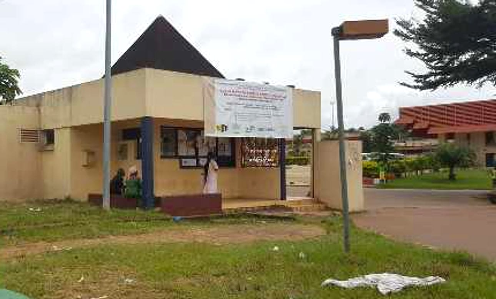

Accueil / L'Université
L'Université des Sciences et Techniques de Masuku
Créée par la loi du 29 janvier 1986 à Franceville, l'USTM est l'université publique scientifique et technique du Gabon.
Accueil / L'Université
Créée par la loi du 29 janvier 1986 à Franceville, l'USTM est l'université publique scientifique et technique du Gabon.
L'USTM a été créée à Franceville (Haut-Ogooué) par le transfert depuis Libreville de la Faculté des Sciences et de l'École nationale supérieure d'ingénieurs (ENSIL), devenue l'École Polytechnique de Masuku (EPM).
Elle réunit aujourd'hui la Faculté des Sciences, l'EPM, l'Institut national supérieur d'Agronomie et de Biotechnologies (INSAB) et l'École doctorale. Elle est membre de l'Agence universitaire de la Francophonie et de l'Association des universités africaines.



La loi crée l'université à Franceville, dans le Haut-Ogooué.
La Faculté des Sciences et l'École nationale supérieure d'ingénieurs (ENSIL) rejoignent Franceville ; l'ENSIL devient l'École Polytechnique de Masuku.
Il succède au Pr Crépin Ella Missang, en poste de 2019 à 2024.
Le Chef de l'État annonce 3 milliards FCFA pour la réhabilitation et la modernisation de l'USTM.
Faculté des Sciences, École Polytechnique de Masuku et INSAB.
Voir les établissements →Le site officiel cite aussi une faculté de médecine, une école vétérinaire et un centre à Koulamoutou.
En savoir plus →Former les scientifiques, les ingénieurs et les agronomes du Gabon, produire de la connaissance et accompagner le développement du pays.
Une université moderne, avec des laboratoires et des ateliers rénovés, un campus numérique et un lien fort avec l'emploi (mines, énergie, BTP, agriculture).
Rigueur scientifique, esprit d'innovation, transparence et engagement au service de la nation.
Découvrir les filières de la Faculté des Sciences, de l'EPM et de l'INSAB.
Dépôt du dossier et inscription sur la plateforme officielle de l'université.
Cours, travaux pratiques et laboratoires ; notes, emploi du temps et annonces dans l'espace numérique.
Évaluation, soutenance devant jury et délivrance du diplôme.

Les réseaux universitaires dont l'USTM est membre.
Découvrez nos formations et déposez votre pré-inscription en ligne.